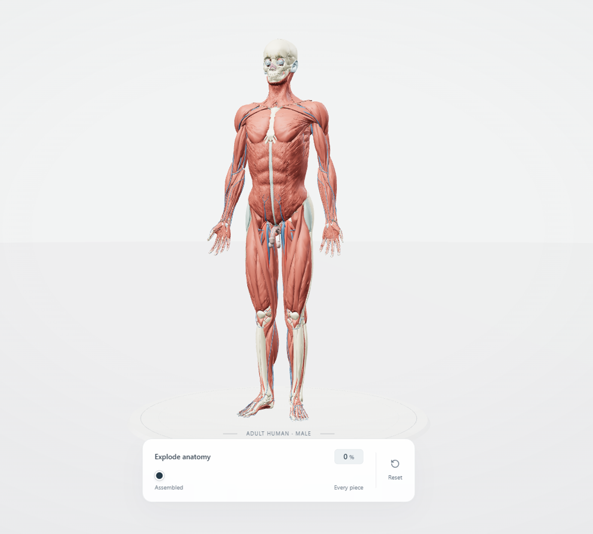
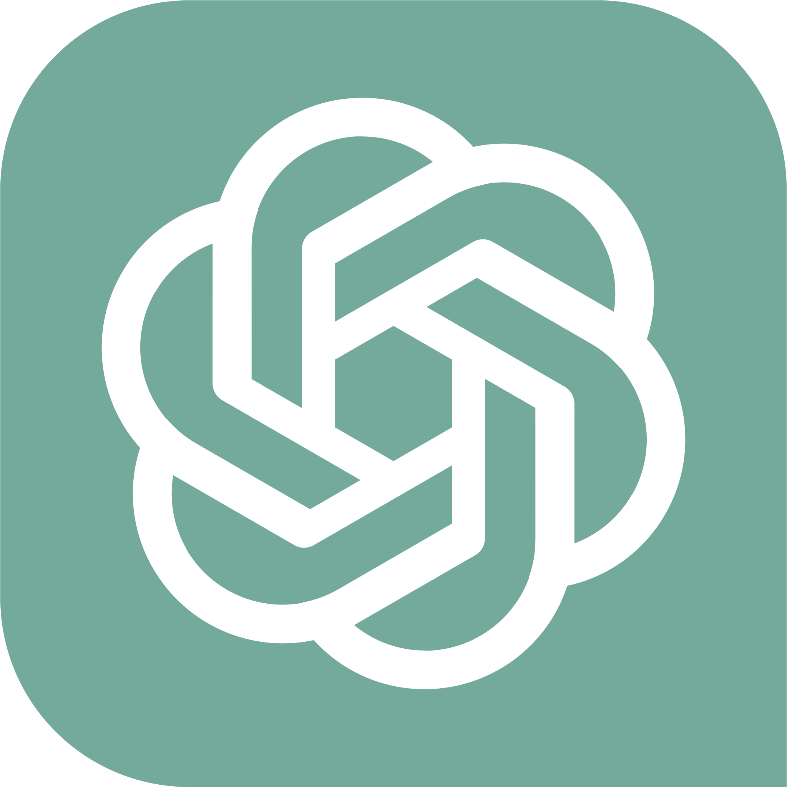

EVIDENCE 0101 Interactive Courseware
Built a 3D anatomy web app with an Agent;
students dissect structures instead of staring at figures
No ranking, no favoritism
Just strengths and things to watch

ChatGPTStrength: Versatile, easy to start, rich ecosystem; great for writing and research.Weakness: deep tasks often need setup; continuous work depends on your plan.
Strength: Claude Code reads codebases, edits multiple files, runs tests, then adjusts.Weakness: Fairly technical; non-majors need time to ramp up.
 WorkBuddy
WorkBuddyStrength: State a goal; it breaks down steps, calls tools, generates files,leaving process and results for human review。Weakness: Ecosystem is newer, still growing.
 Antigravity
AntigravityStrength: Google's Agent platform with Editor and Manager views; runs multiple Agents in parallel and delivers Artifacts (task lists, screenshots, recordings) for review.Weakness: Geared to development; concepts are newer than typical assistants.